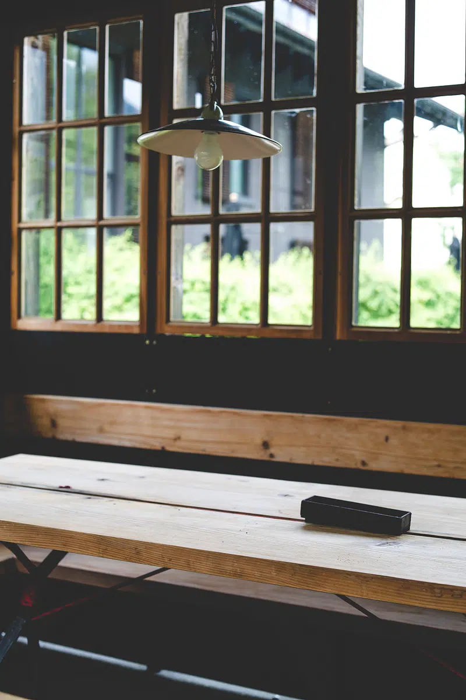

イメージ写真（店舗の実際の様子とは異なります）バスクチーズケーキのイメージ
Asahi-cho, Ashikaga
at...COFFEE
栃木県足利市旭町。大きな窓から光が差し込む、白を基調とした明るい店内で、静かな時間を過ごせるカフェです。
★★★★4.3（クチコミ19件）
About
at...COFFEEについて
at...COFFEEは、栃木県足利市旭町にあるカフェです。足利の観光地から少し離れた立地にあり、ゆったりと過ごしていただけます。白を基調とした明るい内装に、大きな窓ガラスとウッド調の家具を合わせた、落ち着いた雰囲気の店内です。開放感のある空間で、ゆっくりとした時間をお過ごしください。
メニューを見る ＞
Instagram
Instagramで最新情報をお届けしています
at...COFFEEでは、公式ホームページの代わりにInstagramで日々の店内の様子や新しいメニューの情報を発信しています。気になることがあれば、InstagramのDMからお気軽にお問い合わせください。
Instagramを見る・メッセージを送る
Access
アクセス
〒326-0802 栃木県足利市旭町527
営業時間：水・木・金・土・日 11:00〜17:30（月・火定休）
※営業時間は変更になる場合があります。最新情報はInstagramまたはGoogleマップをご確認ください。